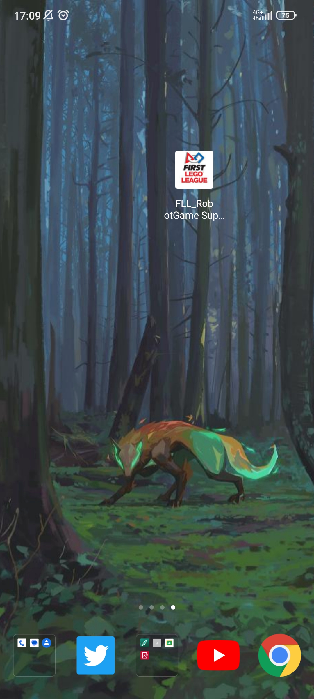
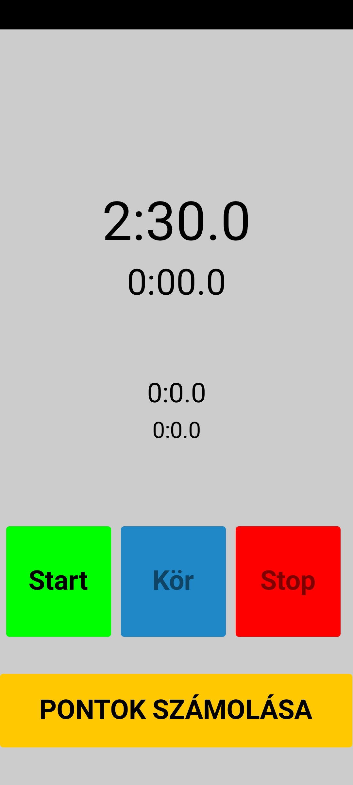
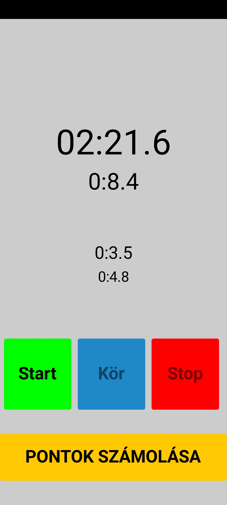
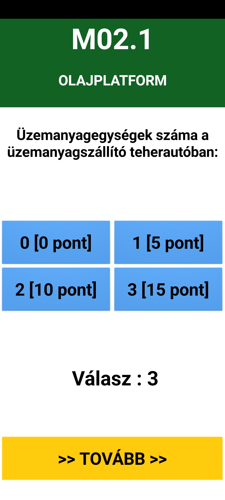

Our team designed an application for evaluating robot game rounds called Scorewatch. |
 |
  |
The name represents the 2 main aspects of the tool: it serves as a timer, however it is capable of measuring laps, which is essential for tracking the amount of time we spend on each round. |
This app doubles as a completely functional Hungarian score sheet, it can calculate the exact amount of points we acquire in a certain round. |
 |
You can download our app here! |
|